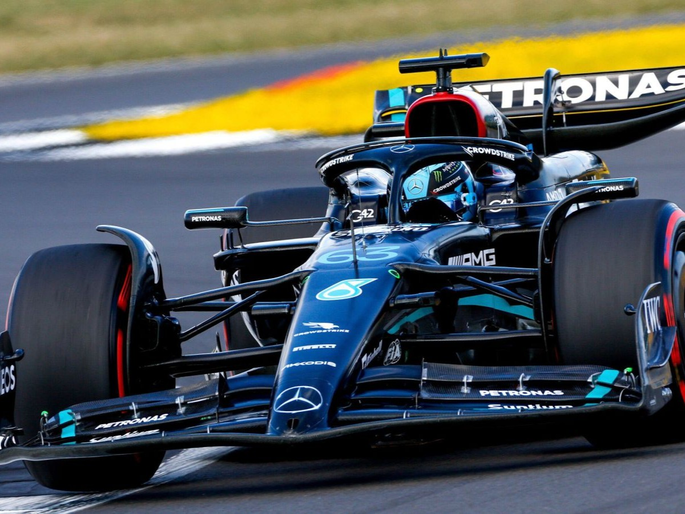
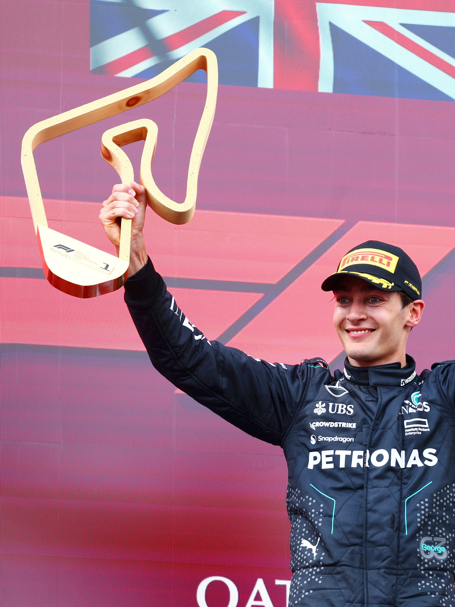
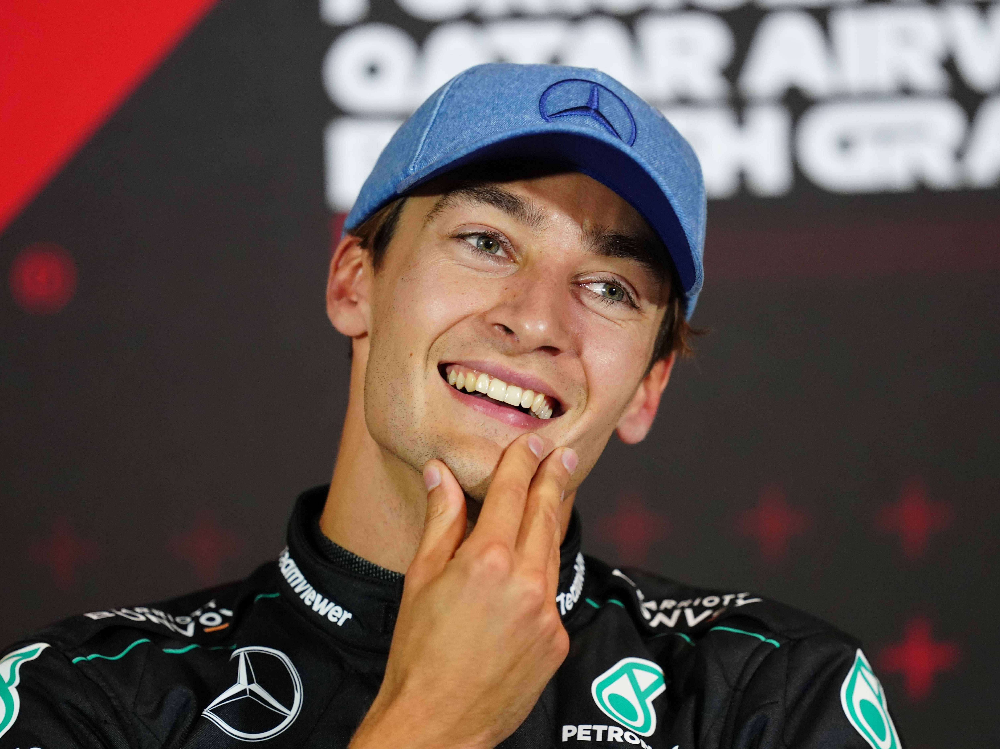
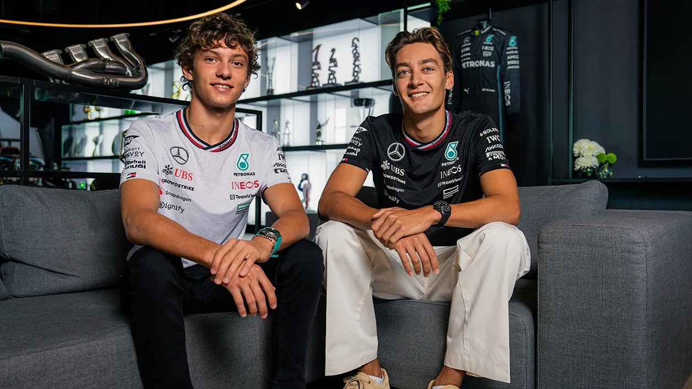
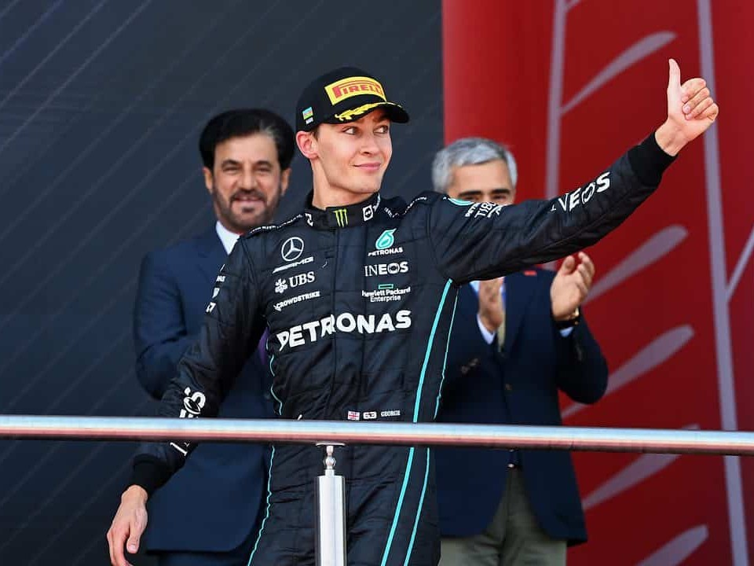

The Driver
- Full NameGeorge William Russell
- Born15 Feb 1998
- NationalityBritish 🇬🇧
- TeamMercedes-AMG Petronas
- Number#63
- Nickname"Mr. Saturday"
- Height185 cm
조지 러셀은 영국 노퍽 주 킹스 린 출신의 F1 드라이버입니다. GP3, F2를 거쳐 2019년 윌리엄스로 F1에 데뷔했으며, 예선에서 탁월한 능력을 보여주며 "Mr. Saturday"라는 별명을 얻었습니다.
2022년부터 메르세데스 AMG 페트로나스에 합류해 브라질 GP에서 첫 우승을 차지했습니다. 2025년 루이스 해밀턴의 페라리 이적 후 팀의 단독 에이스로 캐나다·싱가포르 GP를 제패, 커리어 최고 성적(319점)을 기록하며 차세대 F1을 이끌 드라이버임을 증명했습니다.
Timeline
카팅 & 주니어 포뮬러
카팅에서 두각을 나타내며 포뮬러 르노, F3로 빠르게 성장. 메르세데스 주니어 드라이버 프로그램 합류.
F2 챔피언십 우승 🏆
ART Grand Prix 소속으로 FIA 포뮬러 2 챔피언십을 제패. F1 시트를 향한 확실한 발판 마련.
Williams F1 데뷔 🔵
최하위권 머신으로도 뛰어난 예선 퍼포먼스를 보이며 "Mr. Saturday" 별명 획득. 2020 바레인 GP에서 메르세데스 W11 대타 출전.
Mercedes 합류 & 첫 우승 ⭐
루이스 해밀턴의 팀메이트로 메르세데스에 합류. 브라질 GP에서 F1 커리어 첫 우승을 달성!
2연승 & DQ의 굴곡 ⚡
2024 오스트리아 GP, 라스베가스 GP 우승으로 시즌 2승. 벨기에 GP에서는 레이스 승리 후 기술 규정 위반으로 실격 처리되는 굴곡도 겪음. 팀 내 리더십은 더욱 강화.
팀 리더로 우뚝 서다 🌟
해밀턴의 페라리 이적 후 메르세데스 에이스로. 캐나다 GP·싱가포르 GP 우승(2승), 9개 포디움, 319점으로 커리어 최고 성적. 2026 시즌까지 계약 연장 발표.
By The Numbers
Recent Race Results
Moments





Quotes
"I think qualifying is where I can really make a difference. Every tenth matters when you're fighting for position."
— George Russell
"The hunger to win never goes away. Every time I get in the car, I want to be the best version of myself."
— George Russell
"Those years at Williams taught me resilience. You learn more in adversity than you ever do when everything is going well."
— George Russell